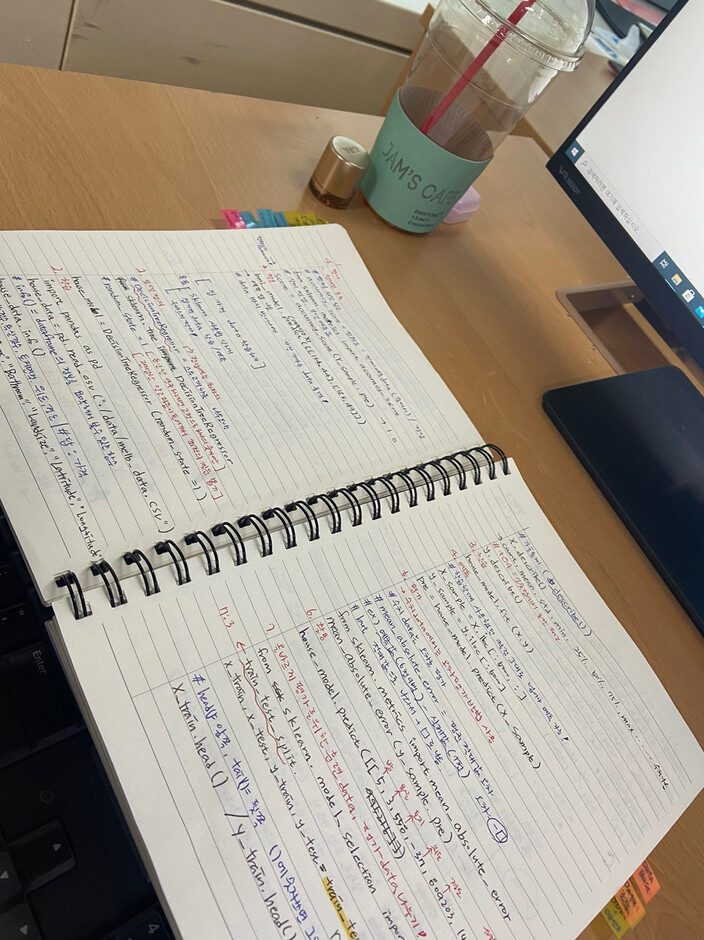

저는 비 전공자이며 컴퓨터에 대한 이해도가 바닥인 상태였지만 스마트인재개발원을 만나 저의 진로와 꿈에 한 발짝 다가섰습니다! 이 곳 선생님들께서 IT 쪽의 호기심과 흥미를 불러일으켜 주시며 처음부터 어린아이 가르쳐 주듯 꼼꼼하게 가르쳐주신 덕에 저는 얼마 되지 않는 기간에도 빠르게 성장할 수 있게 되었습니다. 가끔 벅차고 힘이 들 때 선생님들께서 먼저 알아봐 주시고 저의 상태를 항시 체크를 해주셔서 행복하게 과정을 수료해 나가게 되었습니다. 정말 저는 운동 말고는 아는 게 하나도 없었지만 이 과정을 수료하면서 Java, DB, 머신러닝, 파이썬, HTML 등등 새로운 것을 경험하며 쌓아갈 수 있는 시간을 갖게 되었고 저의 성공도 멀리 있지 않다고 생각합니다! 두려워 하지 마시고 도전해보세요!! 시작이 반이에요 여러분♥
PS) 쌤들은 귀찮게 하는거 굉장히 좋아하세요!!!!!
